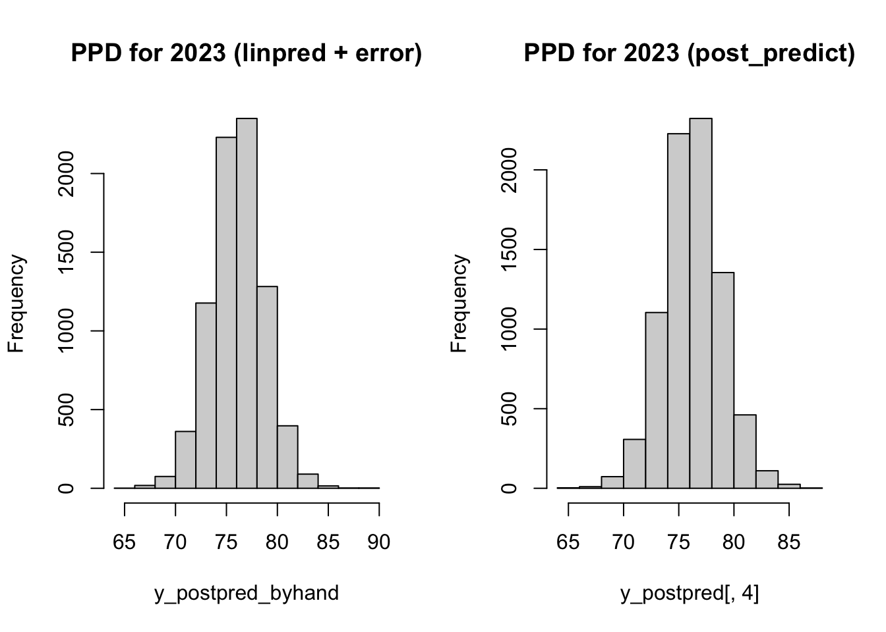

Key difference: confidence and credible intervals: about the (unknown) parameter; prediction interval: about individual (unseen) observations.
Confidence vs credible interval
Confidence interval (frequentist), about the unknown but fixed parameter. That means, the parameter is not treated as a random variable so does not have a probability distribution. CI is random because it is based on your sample.
Credible interval (Bayesian), associated with posterior distribution of the parameter. The parameter is treated as a random variable hence has a probability distribution.
Prediction intereval
In a regression model, you might want to know both confidence and prediction intervals.
CI for mean value of \(y\) when \(x =0\), the mean response (e.g. growth of GDP), this is a parameter, an average
PI for \(y\) when \(x=0\), this is an individual observation.
In simple linear regression
Standard deviation for linear predictor \(\alpha + \beta x\) is
Difference between posterior distribution and posterior predictive distribution PPD
posterior dist \(p(\theta|x) = c \times p(x|\theta)p(\theta)\), depends on the parameter \(\theta\)
PPD does not depend on \(\theta\) as it is integrated out, for unobserved \(x^*\),
\(p(x^*|x) = \int_{\Theta} c \times p(x^*, \theta|x) d\theta = \int_{\Theta} c \times p(x^*|\theta)p(\theta|x) d\theta\)
PD is part of PPD formulation.
PD explains the unknown parameter (treated as a random variable), conditional on the evidence observed (data).
PPD is the distribution for the future predicted data based on the data you have already seen.
Example: Mortality
We explore the all-cause mortality counts in Norway between 2000 to 2023. More specifically, we use year 2000-2019 (pre-pandemic years) to fit a simple linear regression model, and predict the expected number of deaths post pandemic (2020-2023). I include both frequentist approach with lm, and Bayesian approach with rstanarm::stan_glm.
The data of mortality example comes from Statistics Norway and is publicly available.
library(ggplot2)library(patchwork)library(data.table)# load data mortality <-readRDS("data/mortality_2000_2023.rds")# select only total age groupd <- mortality[age =='000_059']d
m_bayes <- rstanarm::stan_glm( deaths_vs_pop_per_100k ~ year, data = dt, family = gaussian,iter =2000,chains =8,refresh =0)m_bayes
stan_glm
family: gaussian [identity]
formula: deaths_vs_pop_per_100k ~ year
observations: 20
predictors: 2
------
Median MAD_SD
(Intercept) 6511.3 173.4
year -3.2 0.1
Auxiliary parameter(s):
Median MAD_SD
sigma 2.2 0.4
------
* For help interpreting the printed output see ?print.stanreg
* For info on the priors used see ?prior_summary.stanreg
sims <-as.matrix(m_bayes)median <-apply(sims, 2, median)medianmad_sd <-apply(sims, 2, mad) # median absolute deviation (similar to sd)mad_sd
Credible interval
# credible interval about the fitcred <- rstanarm::posterior_interval(m_bayes, prob =0.95)cred
The uncertainty of linear predictor, \(a + bx\) is propagated through the uncertainty in \(a\) and \(b\), respectively. For now the error term is not included.
rstanarm::posterior_linpred is equivalent to using each pairs of \(a, b\) from the posterior distribution to compute the point predictions.
# linear predictor with uncertainty via a's and b'sy_linpred <- rstanarm::posterior_linpred(m_bayes, newdata = dnew)head(y_linpred)
With PPD, include the additional uncertainty in \(\sigma\). This is equivalent to using the linear predictor from above, plus a random draw from rnorm(1, 0, sigma).
Due to randomness in the error, we can not get the exact same results. But they should be close enough.
# by hand# focus on one year: 2023n_sim <-nrow(sims)y_postpred_byhand <- y_linpred_byhand +rnorm(n_sim, 0, sims[,3])par(mfrow =c(1,2))hist(y_postpred_byhand, main ='PPD for 2023 (linpred + error)')hist(y_postpred[,4], main ='PPD for 2023 (post_predict)')

y_postpred[,4] |>summary()
Min. 1st Qu. Median Mean 3rd Qu. Max.
65.09 74.55 76.21 76.25 77.95 87.59
y_postpred_byhand |>summary()
Min. 1st Qu. Median Mean 3rd Qu. Max.
64.98 74.41 76.11 76.11 77.79 88.70
Prediction for 2020-2023 mortality
Here we choose to use rstanarm::posterior_predict().